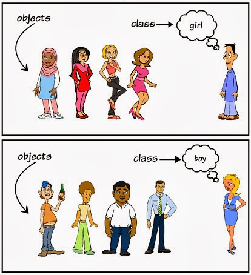

Java Objects and Classes
As an object-oriented programming language, Java supports the following basic concepts:
1、Class：
- A blueprint that defines objects, including attributes and methods.
- Example:
public class Car { ... }
2. Object：
- An instance of a class, having state and behavior.
- Example:
Car myCar = new Car();
3. Inheritance：
- A class can inherit the attributes and methods of another class.
- Example:
public class Dog extends Animal { ... }
4. Encapsulation：
- Make the object's state (fields) private, and access it through public methods.
- Example:
private String name; public String getName() { return name; }
5. Polymorphism：
- Objects can appear in multiple forms, mainly implemented through method overloading and method overriding.
- Example:
- Method Overloading:
public int add(int a, int b) { ... }和public double add(double a, double b) { ... } - Method Overriding:
@Override public void makeSound() { System.out.println("Meow"); }
- Method Overloading:
6. Abstraction：
- Use abstract classes and interfaces to define methods that must be implemented, without providing concrete implementations.
- Example:
- Abstract Class:
public abstract class Shape { abstract void draw(); } - Interface:
public interface Animal { void eat(); }
- Abstract Class:
7. Interface：
- Defines methods that a class must implement, supporting multiple inheritance.
- Example:
public interface Drivable { void drive(); }
8. Method：
- Defines the behavior of a class; functions contained in a class.
- Example:
public void displayInfo() { System.out.println("Info"); }
9. Method Overloading：
- The same class can have multiple methods with the same name but different parameters.
- Example:
public class MathUtils { public int add(int a, int b) { return a + b; } public double add(double a, double b) { return a + b; } }
In this section, we focus on the concepts of objects and classes.
- Object: An object is an instance of a class (an object is not about finding a girlfriend), and it has state and behavior.
- 类: A class is a template that describes the behavior and state of a type of object.
In the figure belowboy、girl为class, and each specific person is anobject：

In the figure belowcar为class, and each specific car is ancarclass'sobject, and the object contains the car's color, brand, name, etc.

Objects in Java
Now let's gain a deeper understanding of what an object is. Look at the real world around you; you will find many objects around you, such as cars, dogs, people, and so on. All these objects have their own state and behavior.
Take a dog as an example: its state includes name, breed, and color, and its behavior includes barking, wagging its tail, and running.
Comparing real-world objects with software objects, they are very similar.
Software objects also have state and behavior. The state of a software object is its attributes, and its behavior is reflected through methods.
In software development, methods operate on changes to the internal state of objects, and the mutual invocation of objects is also accomplished through methods.
Classes in Java
A class can be viewed as a template for creating Java objects.

Create a simple class as shown in the figure above to understand the definition of a class in Java:
A class can contain the following types of variables:
- Local variables: Variables defined in methods, constructors, or statement blocks are called local variables. The declaration and initialization of the variable are both in the method, and when the method ends, the variable is automatically destroyed.
- Member variables: Member variables are variables defined in a class but outside the method bodies. Such variables are instantiated when an object is created. Member variables can be accessed by methods, constructors, and statement blocks of a specific class.
- Class variables: Class variables are also declared in a class, outside method bodies, but they must be declared as static.
A class can have multiple methods. In the example above, eat(), run(), sleep(), and name() are all methods of the Dog class.
Constructor Methods
Every class has a constructor. If a constructor is not explicitly defined for a class, the Java compiler will provide a default constructor for that class.
When creating an object, at least one constructor must be called. The constructor's name must be the same as the class name, and a class can have multiple constructors.
Below is an example of a constructor:
Creating Objects
Objects are created from classes. In Java, the keyword new is used to create a new object. Creating an object requires the following three steps:
- Declaration: Declare an object, including the object name and object type.
- Instantiation: Use the keyword new to create an object.
- Initialization: When an object is created with new, the constructor is called to initialize the object.
Below is an example of creating an object:
Compile and run the above program, and it will print the following result:
小狗的名字是 : tommy
Accessing Instance Variables and Methods
Access member variables and member methods through the created object, as shown below:
Using the Object type to declare a variable can only access the methods and properties of the Object class at compile time, but at runtime, you can cast it to a specific type for type conversion, so as to access the methods and properties of that specific type.
Example
The following example shows how to access instance variables and call member methods:
Puppy.java file code:
Compile and run the above program, producing the following result:
小狗的名字是 : tommy 小狗的年龄为 : 2 变量值 : 2
Source File Declaration Rules
In the final part of this section, we will learn the declaration rules for source files. When multiple classes are defined in a source file, and there are also import statements and package statements, special attention should be paid to these rules.
- A source file can have only one public class
- A source file can have multiple non-public classes
- The name of the source file should be consistent with the class name of the public class. For example, if the public class in the source file is named Employee, then the source file should be named Employee.java.
- If a class is defined in a package, then the package statement should be the first line of the source file.
- If a source file contains import statements, they should be placed between the package statement and the class definition. If there is no package statement, the import statements should be at the very beginning of the source file.
- The import statements and package statement are valid for all classes defined in the source file. In the same source file, you cannot give different classes different package declarations.
Classes have several access levels, and classes are also divided into different types: abstract classes, final classes, and so on. These will be introduced in the Access Control chapter.
In addition to the types mentioned above, Java also has some special classes, such as:Inner classes、Anonymous classes。
Java Packages
Packages are mainly used to categorize classes and interfaces. When developing Java programs, you may write hundreds or thousands of classes, so it is necessary to categorize classes and interfaces.
import Statements
In Java, if a complete qualified name is given, including the package name and class name, the Java compiler can easily locate the source code or class. The import statement is used to provide a reasonable path so that the compiler can find a certain class.
For example, the following command line will instruct the compiler to load all classes under the java_installation/java/io path.
import java.io.*;
A Simple Example
In this example, we create two classes:Employee 和 EmployeeTest。
First open the code editor, paste the following code into it, and save the file asEmployee.java。
The Employee class has four member variables: name, age, designation, and salary. This class explicitly declares a constructor method, which has only one parameter.
Employee.java file code:
Java programs all start execution from themainmethod. To run this program, you must include the main method and create an instance object.
Below is the EmployeeTest class, which instantiates two instances of the Employee class and calls methods to set variable values.
Save the following code in the EmployeeTest.java file.
EmployeeTest.java file code:
Compile these two files and run the EmployeeTest class, and you can see the following result:
$ javac EmployeeTest.java Employee.java $ java EmployeeTest 名字:RUNOOB1 年龄:26 职位:高级程序员 薪水:1000.0 名字:RUNOOB2 年龄:21 职位:菜鸟程序员 薪水:500.0Other extensions
stinkaroo
190***276@qq.com
Java mandates that the class name (the only public class) and the file name be consistent, so there is no need to explicitly declare when referencing other classes. At compile time, the compiler will look for a file with the same name based on the class name.
stinkaroo
190***276@qq.com
LadyLeane
q-b***sn.com
The function of package is the same as that of namespace in C++, to prevent conflicts between classes with the same name. When compiling, the Java compiler directly generates the compiled class files into the corresponding directory according to the information specified by package. Such aspackage aaa.bbb.cccThe compiler generates each class in the .java file into./aaa/bbb/ccc/this directory.
import is used to simplify the instantiation code after using package. Suppose./aaa/bbb/ccc/class A under ..., if there is no import, instantiating class A would be:new aaa.bbb.ccc.A(), usingimport aaa.bbb.ccc.Aafterwards, you can directly usenew A(), which is to say, the compiler matches and expandsaaa.bbb.ccc.this string.
LadyLeane
q-b***sn.com
Amitofo
253***7490@qq.com
Reference address
Why can a Java file contain only one public class?
Java programs start execution from the main function of a public class (actually the main thread), just as C programs start from the main() function. There can only be one public class to make it convenient for the class loader. A public class can only be defined in a file whose name matches the class name.
Each compilation unit (file) has only one public class. Because each compilation unit can only have one public interface, represented by the public class. This interface can contain many package-access classes as required. If there is more than one public class, the compiler will report an error. Also, the name of the public class must be the same as the file name (strictly case-sensitive). Of course, a compilation unit can also have no public class.
Amitofo
253***7490@qq.com
Reference address
pxn626
790***000@qq.com
Reference address
Difference between member variables and class variables
Variables modified by static are called static variables, which are essentially global variables. If some content is shared by all objects, then it should be modified with static; content not modified by static is actually a special description of the object.
Instance variables of different objects are allocated different memory spaces. If a class's member variables include a class variable, then all objects share the same memory location for that class variable. Changing this class variable in one object will affect the class variable in other objects, meaning objects share the class variable.
Differences between member variables and class variables:
1. The life cycles of the two variables are different
Member variables exist with the creation of the object and are released with the collection of the object.
Static variables exist with the loading of the class and disappear with the disappearance of the class.
2. Different calling methods
Member variables can only be called by objects.
Static variables can be called by objects, and can also be called by class names.
3. Different aliases
Member variables are also called instance variables.
Static variables are also called class variables.
4. Different data storage locations
Member variables are stored in objects in heap memory, so they are also called object-specific data.
Static variable data is stored in the static area of the method area (shared data area), so it is also called shared data of objects.
The static keyword is a modifier used to modify members (member variables and member functions).
Features:
1. To achieve sharing of common data among objects, you can modify this data with static.
2. Members modified by static can be directly called by the class name. That is, static members have an additional calling method: class name.static.
3. Static is loaded with the loading of the class, and exists before objects.
Disadvantages:
1. Some data is specific to objects and cannot be modified with static. Because if it were, specific data would become shared data of objects, and the description of things would be problematic. Therefore, when defining static, you must be clear whether the data is shared by objects.
2. Static methods can only access static members and cannot access non-static members.
Because static methods are loaded before objects exist, there is no way to access members in objects.
3. The this and super keywords cannot be used in static methods.
Because this represents an object, and when static exists, there may be no object, so this cannot be used.
When should static members be defined? Or rather: when defining members, do they need to be modified with static?
Members are divided into two types:
1. Member variables. (Use static when data is shared)
Is the data of the member variable the same for all objects:
If yes, then the variable needs to be modified with static, because it is shared data.
If not, then it is object-specific data and should be stored in the object.
2. Member functions. (If the method does not call specific data, define it as static)
How to determine whether a member function needs to be modified with static?
Just check whether the function accesses object-specific data:
If it accesses specific data, the method cannot be modified with static.
If it does not access specific data, then the method needs to be modified with static.
Differences between member variables and static variables:
1. Member variables belong to objects, so they are also called instance variables.
Static variables belong to classes, so they are also called class variables.
2. Member variables exist in heap memory.
Static variables exist in the method area.
3. Member variables exist when the object is created and disappear when the object is collected.
Static variables exist with the loading of the class and disappear with the disappearance of the class.
4. Member variables can only be called by objects.
Static variables can be called by objects, and can also be called by class names.
Therefore, member variables can be called object-specific data, and static variables can be called shared data of objects.
pxn626
790***000@qq.com
Reference address
Demetris
150***67161@163.com
Types of class variables:
1. Local variables: variables defined in methods, constructors, or statement blocks. Their declaration and initialization are implemented in the method, and they are automatically destroyed after the method ends.
public class ClassName{ public void printNumber（）{ int a; } // 其他代码 }2. Member variables: defined in a class, outside the method body. Variables are instantiated when an object is created. Member variables can be accessed by methods in the class, constructors, and statement blocks of a specific class.
public class ClassName{ int a; public void printNumber（）{ // 其他代码 } }3. Class variables: defined in a class, outside the method body, but must use static to declare the variable type. Static members belong to the entire class and can be called by object name or class name.
public class ClassName{ static int a; public void printNumber（）{ // 其他代码 } }Demetris
150***67161@163.com
ycxchkj
xch***163.com
Class constructors
1. The constructor has the same name as the class and has no return value.
2. Constructors are mainly used to define the initialization state for objects of a class.
3. We cannot directly call a constructor; it must be automatically called through the new keyword to create an instance of a class.
4. All Java classes require a constructor. If no constructor is defined, the Java compiler will provide a default constructor, that is, a constructor without parameters.
The role of the new keyword
1. Allocate memory space for the object.
2. Trigger the call of the object's constructor.
3. Return a reference for the object.
ycxchkj
xch***163.com
Lynn
276***577@qq.com
Reference address
The above is Oracle's definition of static. The general meaning is that sometimes you want to have variables that are common to all objects. This is done through the static modifier. Fields with a static modifier in their declaration are called static fields or class variables. They are associated with the class, not with any object.
Lynn
276***577@qq.com
Reference address
lllunaticer
tdl***tju.edu.cn
When using a Java class to instantiate an object, if the constructor is not explicitly declared in the class, a default constructor will be used to initialize the object.
Example:
//一个没有显式声明构造函数的类 Public class People{ int age = 23; Public void getAge(){ System.out.print("the age is "+age); } } //用这个类来实例化一个对象 People xiaoMing = new People(); // People() 是People类的默认构造函数，它什么也不干 xiaoMing.getAge();//打印年龄You can also explicitly declare a constructor when declaring the class:
//一个带显式构造函数的类 Public class People{ int age = 23; Public void getAge(){ System.out.print("the age is "+ age); } // 显式声明一个带参数的构造函数，用于初始化年龄 Public People(int a){ this.age = a; } } //用这个类来实例化一个对象 People xiaoMing = new People(20); // 使用带参数的构造函数来实例化对象 xiaoMing.getAge(); // 打印出来的年龄变为20lllunaticer
tdl***tju.edu.cn
2333
135***8036@qq.com
Differences Between Member Variables and Local Variables
1. Different declaration locations
Member variables, also known as attributes, are declared in a class.
Local variables are declared in methods or in code blocks.
2. Different initial values
If a member variable is not assigned a value, it has a default value; different data types have different default values.
Local variables have no default value; that is, they must first be declared, then assigned, and finally used.
3. In a class, local variables can have the same name as member variables, but local variables take precedence. If you must access the member variable's attribute, you have to use this.color.
thisThis represents the current object, that is, whoever calls this method is the object.
Difference Between Objects and References
An object is a specific instance, such as:new Student();new means creating an object and opening up a space in heap memory.
The reference name stores the address of the object.
2333
135***8036@qq.com
tfbyly
905***717@qq.com
Inner class: Placing the definition of one class inside the definition of another class is an inner class.
Just as a person is composed of body parts such as the brain, limbs, and organs, an inner class is equivalent to one of those organs. For example, the heart: it also has its own attributes and behaviors (blood, beating).
Obviously, here one cannot represent a heart solely with an attribute or method; a class is needed, and the heart is inside the human body, just as an inner class is inside an outer class.
1) Without using an inner class:
public class Person { private int blood; private Heart heart; } public class Heart { private int blood; public void test() { System.out.println(blood); } }2) Using an inner class:
public class Person { private int blood; public class Heart { public void test() { System.out.println(blood); } } public class Brain { public void test() { System.out.println(blood); } } }Advantages and disadvantages of inner classes:
Application example
//外部类 class Out { private int age = 12; //内部类 class In { public void print() { System.out.println(age); } } } public class Demo { public static void main(String[] args) { Out.In in = new Out().new In(); in.print(); //或者采用下种方式访问 /* Out out = new Out(); Out.In in = out.new In(); in.print(); */ } }Running result: 12
It is not difficult to see from the above example that inner classes actually seriously damage good code structure, but why still use inner classes?
Because an inner class can freely use the member variables of the outer class (including private ones) without generating an object of the outer class; this is also the only advantage of inner classes.
Just as the heart can directly access the body's blood, rather than having a doctor draw blood.
After compilation, the program will produce two .class files, namely Out.class and Out$In.class.
The $ represents the one in Out.In in the above program.
Out.In in = new Out().new In()It can be used to generate objects of the inner class. There are two small points of knowledge to note in this method:
Example 2: Variable Access Forms in Inner Classes
For more details, please refer to:
Summary of inner classes in Java
Detailed explanation of Java inner classestfbyly
905***717@qq.com
Xiaobao Huhu
hua***aoling66@163.com
Reference address
For more content, refer to:Summary of the usage of this and super in Java。
Reference to a constructor:
class Person { public static void prt(String s) { System.out.println(s); } Person() { prt("父类·无参数构造方法： "+"A Person."); }//构造方法(1) Person(String name) { prt("父类·含一个参数的构造方法： "+"A person's name is " + name); }//构造方法(2) } public class Chinese extends Person { Chinese() { super(); // 调用父类构造方法（1） prt("子类·调用父类”无参数构造方法“： "+"A chinese coder."); } Chinese(String name) { super(name);// 调用父类具有相同形参的构造方法（2） prt("子类·调用父类”含一个参数的构造方法“： "+"his name is " + name); } Chinese(String name, int age) { this(name);// 调用具有相同形参的构造方法（3） prt("子类：调用子类具有相同形参的构造方法：his age is " + age); } public static void main(String[] args) { Chinese cn = new Chinese(); cn = new Chinese("codersai"); cn = new Chinese("codersai", 18); } }Running result:
Xiaobao Huhu
hua***aoling66@163.com
Reference address
samcyang
532***194@qq.com
Just like C++, Java will automatically construct a constructor if none is defined; if any constructor is defined, it will no longer automatically construct one, and you need to define all constructors yourself.
//一个带显式构造函数的类 Public class People{ int age = 23; Public void getAge(){ System.out.print("the age is "+ age); } // 显式声明一个带参数的构造函数，用于初始化年龄 Public People(int a){ this.age = a; } } //用这个类来实例化一个对象 People xiaoMing = new People(20); // 使用带参数的构造函数来实例化对象 People xiaoMing2 = new People(); // ERROR：一旦显示定义了一个构造函数，就不会再生成默认的构造函数 xiaoMing.getAge(); // 打印出来的年龄变为20samcyang
532***194@qq.com
Phanio
pen***aw@163.com
Reference address
Error:An error of unmappable characters for encoding GBK that occurs when compiling Java source files in CMD.
Solution:Usejavac -encoding UTF-8 .javaSpecify the encoding format.
Reason:Since JDK is an international version, when compiling, if we do not use the -encoding parameter to specify the encoding format of the Java source program, java.exe first obtains the encoding format adopted by our operating system by default. That is, when compiling Java programs, if we do not specify the encoding format of the source program file, JDK first obtains the file.encoding parameter of the operating system (it stores the default encoding format of the operating system, such as win2k, whose value is GBK). Then JDK converts our Java source program from the file.encoding encoding format to the default UNICODE format inside Java and places it in memory. After that, javac compiles the converted UNICODE format file into a class file. At this time, the .class file is UNICODE-encoded and temporarily placed in memory. Then, JDK saves this .class file compiled with UNICODE encoding to the operating system to form the .class file we see. But when we compile without settings, it is equivalent to using the parameter:javac -encoding gbk xx.java, and incompatibility will occur.
Phanio
pen***aw@163.com
Reference address
Ekko404
283***6790@qq.com
Class:
class A{} //最简单的类，没有任何属性和行为A class can contain the following types of variables:
A class can have multiple methods. In the above example: eat(), run(), and sleep() are all methods of the Dog class.
Creating an object:
Object:
Declare with class name and new:
Constructor (constructor function)
Use inside the class being created:
public 类名(){} public 类名(String name){}Accessing instance variables and methods
Access member variables and member methods through the created object, as shown below:
Class variable types:
1. Local variables: Variables defined in methods, constructors, and statement blocks. Their declaration and initialization are implemented in the method, and they are automatically destroyed after the method ends.
public class ClassName{ public void printNumber（）{ int a; } // 其他代码 }2. Member variables: Defined in a class, outside the method body. Variables are instantiated when an object is created. Member variables can be accessed by methods in the class, constructors, and statement blocks of a specific class.
public class ClassName{ int a; public void printNumber（）{ // 其他代码 } }3. Class variables: Defined in a class, outside the method body, but must use static to declare the variable type. Static members belong to the entire class and can be called by object name or class name.
public class ClassName{ static int a; public void printNumber（）{ // 其他代码 } }Ekko404
283***6790@qq.com
jidaojiuyou
232***1805@qq.com
Briefly talk about classes and objects.
Take LOL as an example.
First, for example, heroes in LoL are a class. Because all heroes have corresponding attributes. For example:
public class Hero { String name; //名字 int attackDamage; //物理攻击 int abilityPower; //法术强度 int armor; //护甲 int magicResistance; //魔抗 float attackSpeed; //攻击速度 int cooldownReduction; //冷却缩减 int criticalStrike; //暴击率 int moveSpeed; //移动速度 int hp; //血量 int mp; //蓝量 }Besides attributes, heroes also have behaviors. Such as destroying towers, trolling teammates, stealing kills, dancing, etc.
public class Hero { public void DestroyTower(){ System.out.println("正在拆塔"); } public void Keng(){ System.out.println("坑了一下队友"); } public void Kb(){ System.out.println("抢到了一个人头"); } public void Dance(){ System.out.println("正在跳舞"); } }An object refers to a specific hero, such as Garen. You can `new` an object in the main method.
public static void main(String[] args) { Hero garen = new Hero(); garen.name = "盖伦"; garen.attackDamage = 71; garen.abilityPower = 0; garen.armor = 36; garen.magicResistance = 32; garen.attackSpeed = 0.69f; garen.cooldownReduction = 0; garen.criticalStrike = 0; garen.moveSpeed = 350; garen.hp = 600; garen.mp = 0; }jidaojiuyou
232***1805@qq.com